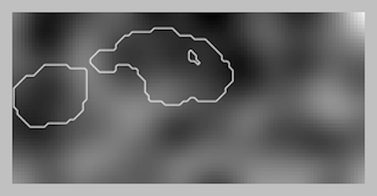

機能バイオメカニクス研究室
¶

ヒトの運動における確率的プロセス
研究
概要
ファシリティ
測定装置
プロジェクト
グループ
論文
Selected papers
Papers on the web
メンバー
トッド パタキ
学生
卒業生
共同研究車
ソフトウェア
spm1d
rft1d
データセット
spm1d
mun104
data1d
連絡先
Table Of Contents
Research
Publications
People
Software
Datasets
Contact
Quick search